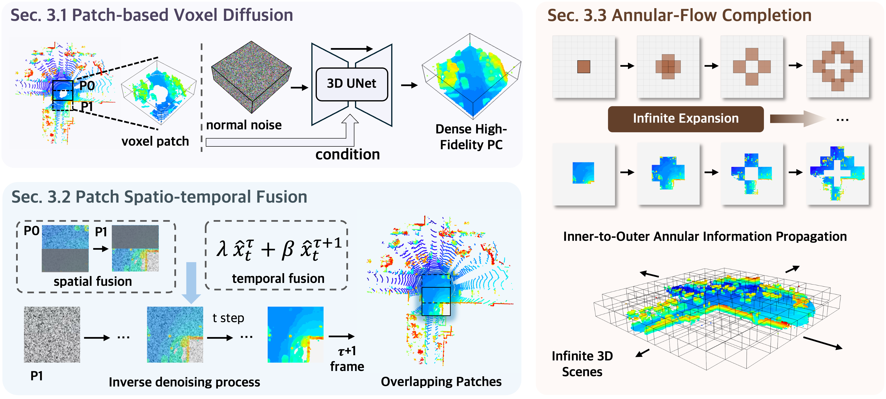
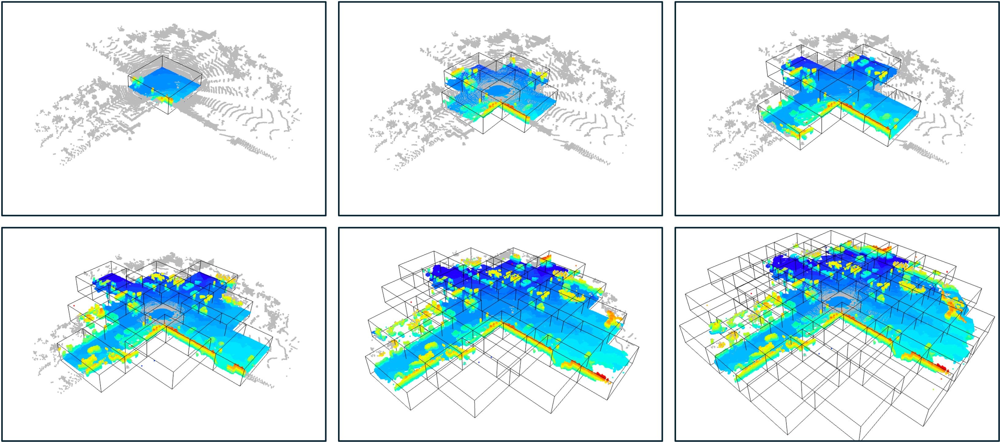
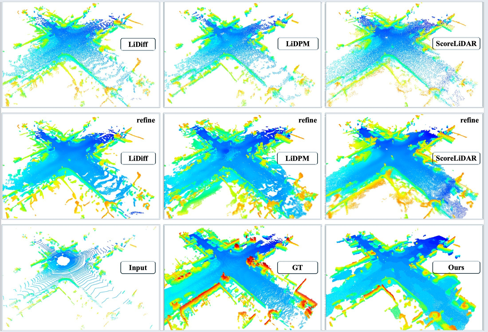
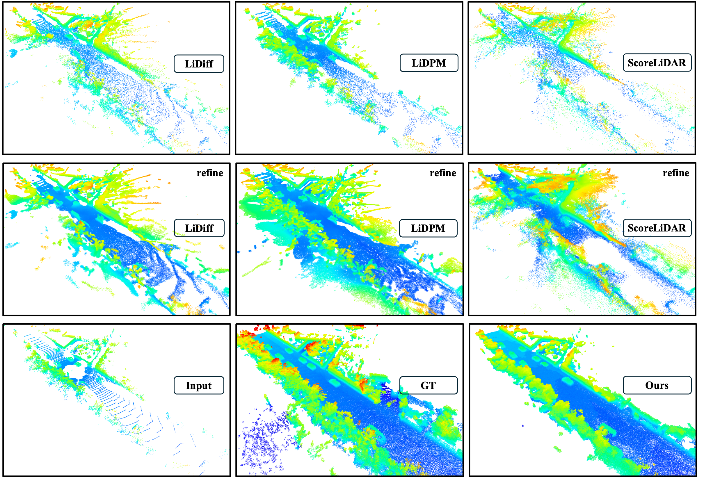
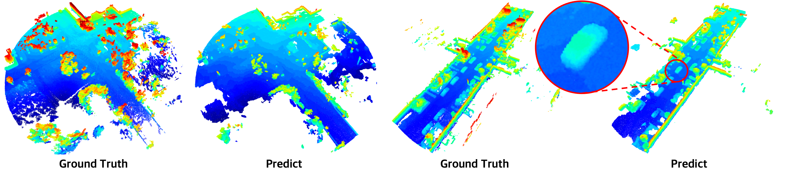
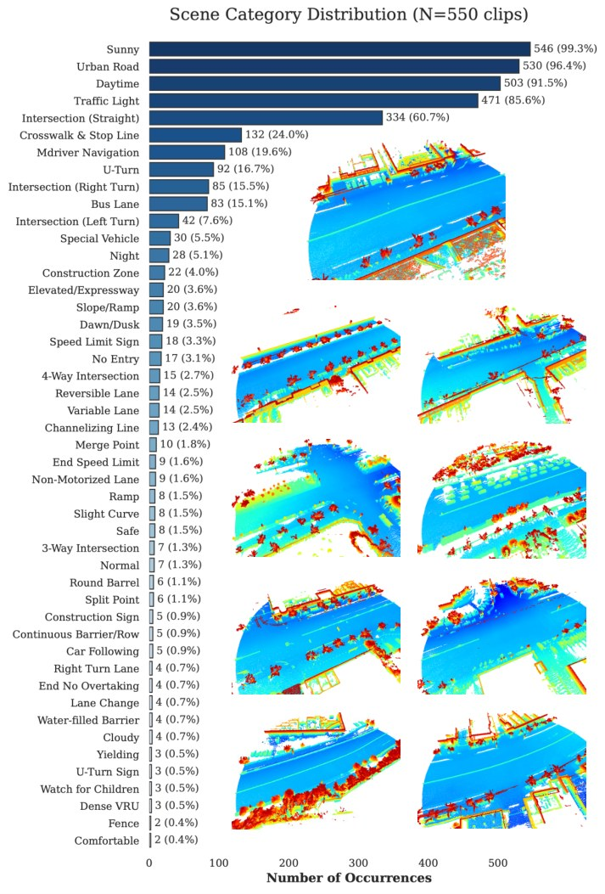
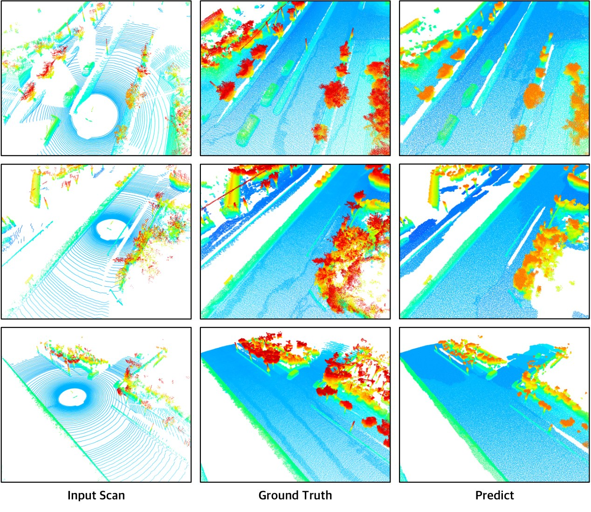

Explicit Voxel Patch Diffusion
Instead of predicting continuous XYZ offsets for individual points, PatchScene denoises binary occupancy states inside high-resolution local voxel patches.
CVPR 2026
Local diffusion. Global coherence. Infinite LiDAR scene completion.
1MEGVII Technology 2Qianli Technology 3Peking University
4Northeastern University, China 5Northwest Polytechnical University, Xi'an
*Equal contribution †Corresponding author
Instead of predicting continuous XYZ offsets for individual points, PatchScene denoises binary occupancy states inside high-resolution local voxel patches.
Overlapping patches and adjacent frames are coupled during denoising, reducing patch boundaries, scattered artifacts, and frame-to-frame flicker.
Generation follows the radial density pattern of LiDAR: high-confidence near-range structure guides sparse far-range regions, enabling spatially scalable completion.
We propose PatchScene, a diffusion-based framework for large-scale LiDAR scene completion. Unlike existing methods that rely on global latent representations or dense voxel grids, PatchScene adopts a patch-based voxel diffusion paradigm that explicitly generates fine-grained geometry within localized 3D regions. To ensure coherent reconstruction at both spatial and temporal scales, we introduce a confidence-guided spatio-temporal fusion mechanism that integrates overlapping patches and adjacent frames in a unified generative process. Furthermore, Annular-Flow diffusion leverages the radial density pattern of LiDAR scans to progressively propagate high-fidelity information from near-range to far-range regions, enabling spatially unbounded scene completion.
Outdoor LiDAR completion is not only a sparsity problem. The representation itself determines how difficult it is to generate precise geometry at scene scale.
Point-based diffusion
Methods such as LiDiff and ScoreLiDAR operate directly on points. Their diffusion process must move noisy points to the correct positions by predicting offsets along three continuous XYZ axes. Small errors easily accumulate into scattered points, smoothed surfaces, and distorted boundaries.
Explicit voxel diffusion
Voxel space discretizes irregular point clouds into a structured grid. Instead of regressing precise continuous coordinates, the model predicts whether each voxel is occupied, making fine-grained geometry easier to reconstruct accurately.
The remaining challenge
High-resolution voxelization grows cubically with scene size. PatchScene resolves this bottleneck by dividing the global voxel grid into overlapping local patches and performing diffusion inside each compact patch.
PatchScene makes large-scale completion tractable without giving up fine geometry: it solves local explicit voxel generation problems, then turns those local solutions into one temporally coherent scene.

Step 1 · Patch-based voxel diffusion
PatchScene decomposes the outdoor scene into overlapping 20 m by 20 m voxel patches. Each local patch is denoised independently in explicit occupancy space, allowing the model to generate fine geometry at a resolution that would be impractical for a single global dense grid.
Step 2 · Spatial consistency fusion
Independent patch generation can leave discontinuities in overlapping regions. During inverse diffusion, PatchScene projects neighboring noise predictions into a global field and stochastically couples 50% of overlap voxels with global context. This aligns adjacent patches while avoiding the blur introduced by deterministic averaging.
Step 3 · Annular-flow completion
Near-range LiDAR observations are dense and reliable, while distant regions are sparse and heavily occluded. Annular-Flow starts from the inner ring and expands outward, letting high-fidelity completed structure guide the next sparse ring at every denoising stage.

PatchScene consistently improves geometric accuracy, distribution fidelity, and volumetric completeness on both SemanticKITTI and KITTI-360.
| Method | CD ↓ | JSD 3D ↓ | JSD BEV ↓ | Voxel IoU ↑ | ||
|---|---|---|---|---|---|---|
| 0.5 | 0.2 | 0.1 | ||||
| LMSCNet | 0.641 | - | 0.431 | 30.8 | 12.1 | 3.7 |
| LODE | 1.029 | - | 0.451 | 33.8 | 16.4 | 5.0 |
| MID | 0.503 | - | 0.470 | 31.6 | 22.7 | 13.1 |
| PVD | 1.256 | - | 0.498 | 15.9 | 4.0 | 0.6 |
| LiDiff | 0.434 | 0.564 | 0.444 | 31.5 | 16.8 | 4.7 |
| LiDiff(refine) | 0.376 | 0.573 | 0.416 | 32.4 | 23.0 | 13.4 |
| LiDPM | 0.446 | 0.532 | 0.440 | 34.1 | 19.5 | 6.3 |
| LiDPM(refine) | 0.377 | 0.542 | 0.403 | 36.6 | 25.8 | 14.9 |
| ScoreLiDAR† | 0.412 | 0.589 | 0.425 | 29.7 | 13.0 | 3.6 |
| ScoreLiDAR(refine)† | 0.342 | 0.590 | 0.399 | 32.0 | 19.9 | 9.4 |
| PatchScene | 0.319 | 0.444 | 0.371 | 45.3 | 38.2 | 19.7 |
| Method | CD ↓ | JSD 3D ↓ | JSD BEV ↓ | Voxel IoU ↑ | ||
|---|---|---|---|---|---|---|
| 0.5 | 0.2 | 0.1 | ||||
| LMSCNet | 0.979 | - | 0.496 | 26.17 | 9.21 | 2.88 |
| LODE | 1.565 | - | 0.483 | 33.06 | 15.24 | 4.68 |
| MID | 0.637 | - | 0.476 | 33.05 | 21.32 | 11.30 |
| LiDiff | 0.564 | - | 0.459 | 33.23 | 17.55 | 4.88 |
| LiDiff(refine) | 0.517 | - | 0.446 | 33.43 | 22.04 | 11.84 |
| ScoreLiDAR | 0.472 | - | 0.444 | - | - | - |
| ScoreLiDAR(refine) | 0.452 | - | 0.437 | - | - | - |
| PatchScene | 0.356 | 0.424 | 0.341 | 51.8 | 42.5 | 21.3 |
SemanticKITTI baselines, metrics, and ground truth follow LiDPM; † denotes independently reproduced and evaluated results. KITTI-360 results are reported in the supplementary material.
Prior methods often remain sparse after completion or introduce hallucinated points during refinement. PatchScene produces denser surfaces with fewer boundary artifacts.


PatchScene caches denoising predictions from the previous frame, aligns them to the current observation, and blends them with density-adaptive weights. This suppresses inter-frame flicker while improving geometry.
Annular-Flow gives PatchScene a natural path to larger scenes: a model trained on 20 m LiDAR ranges can be directly applied to 50 m completion without retraining.

Side-by-side sequences make the same pattern visible over time: PatchScene is denser, cleaner, and more stable than point-offset or score-based baselines.
Beyond SemanticKITTI, the supplementary material evaluates PatchScene on a high-fidelity real-world LiDAR dataset with 550 clips and more than 40 scene categories.


PatchScene reports CD = 0.199 and Voxel IoU = 0.595 at 0.5 m on this dataset, showing robustness under complex real-world driving scenarios.
@inproceedings{patchscene2026,
title = {PatchScene: Patch-based Voxel Diffusion for Large-Scale Scene Completion},
author = {Xu, Qingdong and Zhu, Jiajun and Zhu, Shilin and He, Xinjing and Lu, Chao and Wang, Huanran and Zhang, Jiyao},
booktitle = {Proceedings of the IEEE/CVF Conference on Computer Vision and Pattern Recognition (CVPR)},
year = {2026}
}